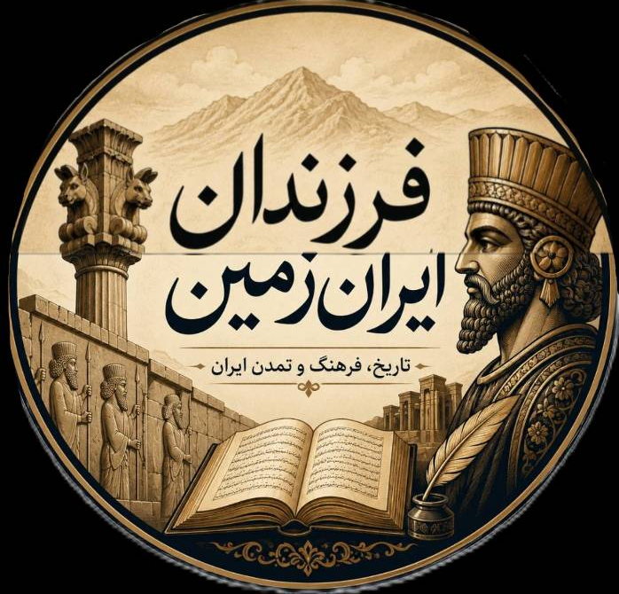
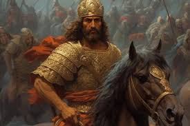
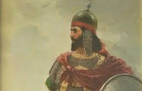
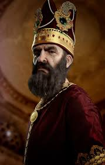

این بخش برای معرفی تاریخ و سرداران ایران ساخته شده است.

آریو برزن یکی از فرماندهان شجاع ایرانی در دوران هخامنشیان بود که بهعنوان نماد مقاومت در برابر حمله اسکندر مقدونی شناخته میشود. او در نبردی سخت در گذرگاههای کوهستانی ایران با سپاه اسکندر مقابله کرد و با وجود امکانات محدود، با شجاعت بسیار از سرزمین خود دفاع نمود. آریو برزن نماد ایستادگی، غیرت و دفاع از وطن در تاریخ ایران است.

نادرشاه افشار یکی از قدرتمندترین پادشاهان و فرماندهان نظامی تاریخ ایران بود که در قرن 18 میلادی حکومت کرد. او بنیانگذار سلسله افشاریه بود و توانست ایران را پس از دوران آشوب دوباره متحد کند. نادرشاه به فتوحات بزرگ و اصلاحات نظامی مشهور است و به «نادرِ ایران» یا «ناپلئون شرق» نیز لقب گرفته است. او نماد قدرت نظامی و احیای دوباره ایران در تاریخ است.

بابک خرمدین رهبر جنبش خرمدینان در قرن سوم هجری بود که سالها علیه حکومت عباسیان در ایران مبارزه کرد. او از آذربایجان قیام خود را آغاز کرد و با هدف حفظ استقلال و هویت ایرانی، مقاومت طولانیمدتی را هدایت نمود. بابک خرمدین بهعنوان نماد آزادیخواهی، مقاومت و مبارزه با ظلم در تاریخ ایران شناخته میشود.
«تنها کسی از این تنگه عبور خواهد کرد که از روی پیکر ما بگذرد»